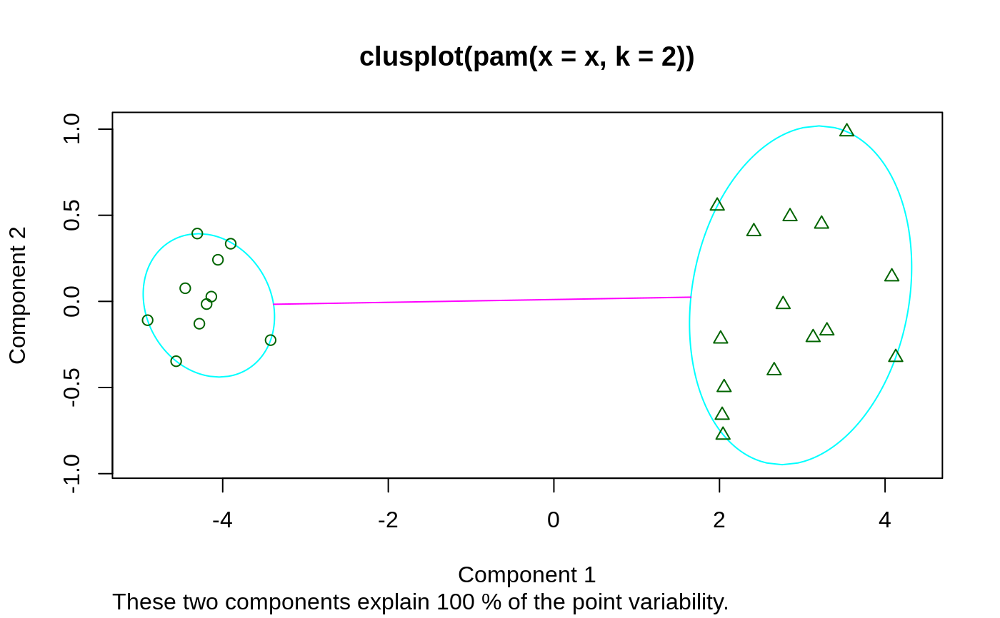

Partitioning Around Medoids
pam.RdPartitioning (clustering) of the data into k clusters “around
medoids”, a more robust version of K-means.
pam(x, k, diss = inherits(x, "dist"),
metric = c("euclidean", "manhattan"),
medoids = NULL, stand = FALSE, cluster.only = FALSE,
do.swap = TRUE,
keep.diss = !diss && !cluster.only && n < 100,
keep.data = !diss && !cluster.only,
pamonce = FALSE, trace.lev = 0)
Arguments
| x | data matrix or data frame, or dissimilarity matrix or object,
depending on the value of the In case of a matrix or data frame, each row corresponds to an
observation, and each column corresponds to a variable. All
variables must be numeric. Missing values ( In case of a dissimilarity matrix, |
|---|---|
| k | positive integer specifying the number of clusters, less than the number of observations. |
| diss | logical flag: if TRUE (default for |
| metric | character string specifying the metric to be used for calculating
dissimilarities between observations. |
| medoids | NULL (default) or length- |
| stand | logical; if true, the measurements in |
| cluster.only | logical; if true, only the clustering will be computed and returned, see details. |
| do.swap | logical indicating if the swap phase should
happen. The default, |
| keep.diss, keep.data | logicals indicating if the dissimilarities
and/or input data |
| pamonce | logical or integer in |
| trace.lev | integer specifying a trace level for printing
diagnostics during the build and swap phase of the algorithm.
Default |
Value
an object of class "pam" representing the clustering. See
?pam.object for details.
Details
The basic pam algorithm is fully described in chapter 2 of
Kaufman and Rousseeuw(1990). Compared to the k-means approach in kmeans, the
function pam has the following features: (a) it also accepts a
dissimilarity matrix; (b) it is more robust because it minimizes a sum
of dissimilarities instead of a sum of squared euclidean distances;
(c) it provides a novel graphical display, the silhouette plot (see
plot.partition) (d) it allows to select the number of clusters
using mean(silhouette(pr)[, "sil_width"]) on the result
pr <- pam(..), or directly its component
pr$silinfo$avg.width, see also pam.object.
When cluster.only is true, the result is simply a (possibly
named) integer vector specifying the clustering, i.e.,
pam(x,k, cluster.only=TRUE) is the same as
pam(x,k)$clustering but computed more efficiently.
The pam-algorithm is based on the search for k
representative objects or medoids among the observations of the
dataset. These observations should represent the structure of the
data. After finding a set of k medoids, k clusters are
constructed by assigning each observation to the nearest medoid. The
goal is to find k representative objects which minimize the sum
of the dissimilarities of the observations to their closest
representative object.
By default, when medoids are not specified, the algorithm first
looks for a good initial set of medoids (this is called the
build phase). Then it finds a local minimum for the
objective function, that is, a solution such that there is no single
switch of an observation with a medoid that will decrease the
objective (this is called the swap phase).
When the medoids are specified, their order does not
matter; in general, the algorithms have been designed to not depend on
the order of the observations.
The pamonce option, new in cluster 1.14.2 (Jan. 2012), has been
proposed by Matthias Studer, University of Geneva, based on the
findings by Reynolds et al. (2006) and was extended by Erich Schubert,
TU Dortmund, with the FastPAM optimizations.
The default FALSE (or integer 0) corresponds to the
original “swap” algorithm, whereas pamonce = 1 (or
TRUE), corresponds to the first proposal ....
and pamonce = 2 additionally implements the second proposal as
well.
The key ideas of FastPAM (Schubert and Rousseeuw, 2019) are implemented except for the linear approximate build as follows:
pamonce = 3:reduces the runtime by a factor of O(k) by exploiting that points cannot be closest to all current medoids at the same time.
pamonce = 4:additionally allows executing multiple swaps per iteration, usually reducing the number of iterations.
pamonce = 5:adds minor optimizations copied from the
pamonce = 2approach, and is expected to be the fastest variant.
Note
For large datasets, pam may need too much memory or too much
computation time since both are \(O(n^2)\). Then,
clara() is preferable, see its documentation.
There is hard limit currently, \(n \le 65536\), at
\(2^{16}\) because for larger \(n\), \(n(n-1)/2\) is larger than
the maximal integer (.Machine$integer.max = \(2^{31} - 1\)).
References
Reynolds, A., Richards, G., de la Iglesia, B. and Rayward-Smith, V. (1992) Clustering rules: A comparison of partitioning and hierarchical clustering algorithms; Journal of Mathematical Modelling and Algorithms 5, 475--504. doi: 10.1007/s10852-005-9022-1 .
Erich Schubert and Peter J. Rousseeuw (2019) Faster k-Medoids Clustering: Improving the PAM, CLARA, and CLARANS Algorithms; Preprint, (https://arxiv.org/abs/1810.05691).
See also
agnes for background and references;
pam.object, clara, daisy,
partition.object, plot.partition,
dist.
Examples
## generate 25 objects, divided into 2 clusters. x <- rbind(cbind(rnorm(10,0,0.5), rnorm(10,0,0.5)), cbind(rnorm(15,5,0.5), rnorm(15,5,0.5))) pamx <- pam(x, 2) pamx # Medoids: '7' and '25' ...#> Medoids: #> ID #> [1,] 9 0.02083845 0.04779499 #> [2,] 21 4.91489684 5.00055423 #> Clustering vector: #> [1] 1 1 1 1 1 1 1 1 1 1 2 2 2 2 2 2 2 2 2 2 2 2 2 2 2 #> Objective function: #> build swap #> 0.7590982 0.6156562 #> #> Available components: #> [1] "medoids" "id.med" "clustering" "objective" "isolation" #> [6] "clusinfo" "silinfo" "diss" "call" "data"summary(pamx)#> Medoids: #> ID #> [1,] 9 0.02083845 0.04779499 #> [2,] 21 4.91489684 5.00055423 #> Clustering vector: #> [1] 1 1 1 1 1 1 1 1 1 1 2 2 2 2 2 2 2 2 2 2 2 2 2 2 2 #> Objective function: #> build swap #> 0.7590982 0.6156562 #> #> Numerical information per cluster: #> size max_diss av_diss diameter separation #> [1,] 10 0.8008373 0.3675216 1.489843 5.435373 #> [2,] 15 1.3944535 0.7810793 2.327893 5.435373 #> #> Isolated clusters: #> L-clusters: character(0) #> L*-clusters: [1] 1 2 #> #> Silhouette plot information: #> cluster neighbor sil_width #> 9 1 2 0.9418852 #> 1 1 2 0.9405461 #> 6 1 2 0.9370983 #> 3 1 2 0.9352283 #> 7 1 2 0.9301063 #> 4 1 2 0.9215570 #> 8 1 2 0.9109754 #> 10 1 2 0.9107339 #> 5 1 2 0.8948298 #> 2 1 2 0.8447696 #> 21 2 1 0.8803575 #> 12 2 1 0.8761020 #> 18 2 1 0.8711533 #> 13 2 1 0.8668025 #> 25 2 1 0.8627936 #> 15 2 1 0.8624311 #> 17 2 1 0.8494012 #> 20 2 1 0.8249862 #> 22 2 1 0.8219680 #> 19 2 1 0.8207140 #> 16 2 1 0.8123525 #> 24 2 1 0.8108644 #> 23 2 1 0.8085635 #> 11 2 1 0.7987535 #> 14 2 1 0.7917255 #> Average silhouette width per cluster: #> [1] 0.9167730 0.8372646 #> Average silhouette width of total data set: #> [1] 0.8690679 #> #> 300 dissimilarities, summarized : #> Min. 1st Qu. Median Mean 3rd Qu. Max. #> 0.07162 0.87722 3.88160 4.01740 6.98730 9.03800 #> Metric : euclidean #> Number of objects : 25 #> #> Available components: #> [1] "medoids" "id.med" "clustering" "objective" "isolation" #> [6] "clusinfo" "silinfo" "diss" "call" "data"plot(pamx)## use obs. 1 & 16 as starting medoids -- same result (typically) (p2m <- pam(x, 2, medoids = c(1,16)))#> Medoids: #> ID #> [1,] 9 0.02083845 0.04779499 #> [2,] 21 4.91489684 5.00055423 #> Clustering vector: #> [1] 1 1 1 1 1 1 1 1 1 1 2 2 2 2 2 2 2 2 2 2 2 2 2 2 2 #> Objective function: #> build swap #> 1.0278352 0.6156562 #> #> Available components: #> [1] "medoids" "id.med" "clustering" "objective" "isolation" #> [6] "clusinfo" "silinfo" "diss" "call" "data"## no _build_ *and* no _swap_ phase: just cluster all obs. around (1, 16): p2.s <- pam(x, 2, medoids = c(1,16), do.swap = FALSE) p2.s#> Medoids: #> ID #> [1,] 1 0.09171478 0.05809576 #> [2,] 16 5.65276181 6.18379381 #> Clustering vector: #> [1] 1 1 1 1 1 1 1 1 1 1 2 2 2 2 2 2 2 2 2 2 2 2 2 2 2 #> Objective function: #> build swap #> 1.027835 1.027835 #> #> Available components: #> [1] "medoids" "id.med" "clustering" "objective" "isolation" #> [6] "clusinfo" "silinfo" "diss" "call" "data"p3m <- pam(x, 3, trace = 2)#> C pam(): computing 301 dissimilarities from 25 x 2 matrix: [Ok] #> pam()'s bswap(*, s=9.03801, pamonce=0): build 3 medoids: #> new repr. 20 #> new repr. 9 #> new repr. 18 #> after build: medoids are 9 18 20 #> swp new 22 <-> 20 old; decreasing diss. 12.1627 by -0.105925 #> swp new 15 <-> 18 old; decreasing diss. 12.0568 by -0.134486 #> end{bswap()}, end{cstat()}## rather stupid initial medoids: (p3m. <- pam(x, 3, medoids = 3:1, trace = 1))#> C pam(): computing 301 dissimilarities from 25 x 2 matrix: [Ok] #> pam()'s bswap(*, s=9.03801, pamonce=0): medoids given #> after build: medoids are 1 2 3 #> end{bswap()}, end{cstat()}#> Medoids: #> ID #> [1,] 9 0.02083845 0.04779499 #> [2,] 22 4.07108872 4.83278367 #> [3,] 15 5.57361453 5.00282508 #> Clustering vector: #> [1] 1 1 1 1 1 1 1 1 1 1 2 3 2 2 3 3 3 3 3 2 3 2 2 3 3 #> Objective function: #> build swap #> 3.8424158 0.4768935 #> #> Available components: #> [1] "medoids" "id.med" "clustering" "objective" "isolation" #> [6] "clusinfo" "silinfo" "diss" "call" "data"# \dontshow{ ii <- pmatch(c("obj","call"), names(pamx)) stopifnot(all.equal(pamx [-ii], p2m [-ii], tolerance=1e-14), all.equal(pamx$objective[2], p2m$objective[2], tolerance=1e-14)) # } pam(daisy(x, metric = "manhattan"), 2, diss = TRUE)#> Medoids: #> ID #> [1,] 9 9 #> [2,] 21 21 #> Clustering vector: #> [1] 1 1 1 1 1 1 1 1 1 1 2 2 2 2 2 2 2 2 2 2 2 2 2 2 2 #> Objective function: #> build swap #> 0.9931287 0.7580734 #> #> Available components: #> [1] "medoids" "id.med" "clustering" "objective" "isolation" #> [6] "clusinfo" "silinfo" "diss" "call"data(ruspini) ## Plot similar to Figure 4 in Stryuf et al (1996) if (FALSE) plot(pam(ruspini, 4), ask = TRUE) plot(pam(ruspini, 4))